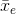

Atomic Particles
|
I think these are actually more complicated than einstein’s special relativity, but not more complicated than einstein’s general relativity. The subatomic particles contained in the nucleus of an atom are known as nucleons. Basically just protons and neutrons. An atomic mass unit () is the units used to measure the mass of protons and neutrons. The mass of both end up being 1. Electrons are small enough to be ~0. The atomic number is the number of protons in an atom. It is labeled as a superscript before the element. The mass number is the sum of the number of protons and neutrons in an atom. It is also the atomic mass in . You can always differentiate them because the mass number is always more than the atomic number when there’s at least 1 neutron. There are many subatomic particles. A neutrino, , is a neutral particle with nearly zero mass. They are often a product of radioactive decay and nuclear reactions, but they don't interact much with matter. The antiparticle of a neutrinos is the antineutrino, , but it has all the same properties as a normal neutrino. An alpha particle is simply the nucleus of a helium atom without any electrons. Thus, it contains 2 protons, 2 neutrons, and a +2 charge. A beta particle is an electron produced when a neutron undergoes a transmutation to become a proton. Really, a neutron is just a combined proton and electron. Notably, it has an atomic number of -1. Just like electrons, protons and neutrons can move between energy levels within the nucleus. When these nucleons move back down to lower energy levels, they release a super high energy photon. These photons are known as gamma rays, . Isotopes are the same chemical element, but have different numbers of neutrons than normal. The mass number is often followed after the element (Ex: carbon-14, uranium-225). During a nuclear reaction, the mass of the reactants don't equal the mass of the products. The difference in mass between the products and reactants is known as the mass defect, . The is explained by . In the reaction, mass may be converted into energy, or vice versa. If mass is less in the products than the reactants, then energy is a product. If mass is more in the products than in the reactants, then energy is a reactant. Radioactive decay occurs when an unstable isotope spontaneously loses energy by emitting particles from its nucleus. In alpha decay, an alpha particle, is spontaneously ejected from the nucleus of an atom. If an alpha particle leaves the nucleus, the mass number of the atom is reduced by 4, while the atomic number is reduced by 2. A beta particle is released when a neutron in the nucleus of an atom decays into a proton and an electron. The mass number of the atom remains the same, and the atomic number increases by 1. The rate at which radioactive decay occurs is measured in half-lifes. One half-life is the time it takes for one half the substance to decay. |